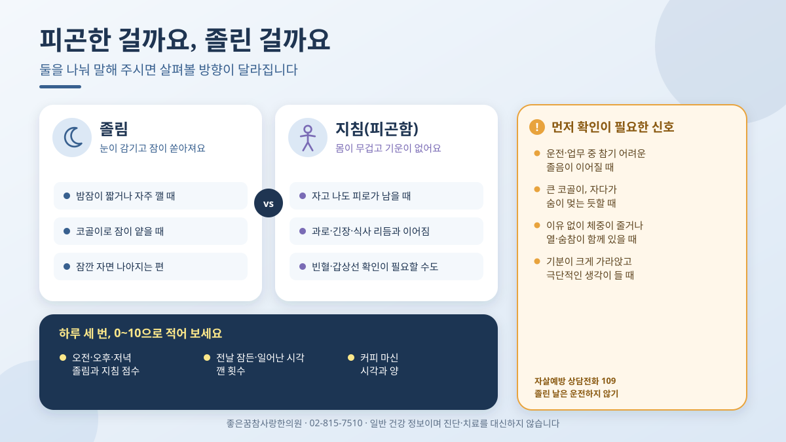

이종호 한의사 감수좋은꿈참사랑한의원 대표원장 (한의사 면허번호 19769)발행 2026-11-23 · 수정 2026-11-25
이 글의 차례
"요즘 너무 피곤해요"라는 말에는 졸림과 지침이 섞여 있는 경우가 많습니다. 졸림은 눈이 감기고 잠이 쏟아지는 느낌이고 피곤함은 몸이 무겁고 기운이 없는 느낌이라, 둘을 나눠 보면 살펴볼 방향이 달라집니다.
진료실에서 이 둘을 나눠 여쭙는 이유도 여기에 있습니다. 졸림이 큰 분은 밤잠의 양과 깊이, 코골이처럼 잠 자체를 먼저 보고, 지침이 큰 분은 식사와 소화, 하루 활동, 마음의 긴장, 필요하면 혈액검사처럼 잠 바깥의 이유를 함께 봅니다. 두 가지가 섞여 있다면 어느 시간대에 어느 쪽이 더 큰지만 알려 주셔도 출발점을 잡기 쉽습니다.
졸림과 지침, 이렇게 나눠 보세요
- 졸림: 눈꺼풀이 무겁고 하품이 잦으며, 조용히 앉아 있으면 깜빡 잠이 듭니다. 짧게 자고 나면 한동안 머리가 맑아지는 경우가 많습니다.
- 지침: 몸이 무겁고 기운이 없지만 누워도 막상 잠이 들지는 않습니다. 쉬거나 자고 나도 무거움이 크게 달라지지 않는 경우가 많습니다.
- 졸림은 회의, 운전, 식사 뒤처럼 가만히 있는 때에 두드러지고, 지침은 계단 오르기나 집안일처럼 몸을 쓸 때 더 크게 느껴지는 편입니다.
- 말로 옮기면 졸림은 "앉기만 하면 졸아요", 지침은 "몸이 천근만근이에요"에 가깝습니다. 어느 쪽 표현이 더 맞는지 떠올려 보세요.
왜 이런 불편이 생길 수 있나요
- 졸림은 밤잠이 짧거나 자주 깨는 경우, 코골이로 잠이 얕은 경우에 많이 이야기됩니다.
- 지침은 잠을 자도 남는 피로로, 과로·긴장·식사 리듬과 이어지는 경우가 많습니다.
- 빈혈이나 갑상선 문제처럼 확인이 필요한 원인이 숨어 있기도 합니다.
- 감기약이나 알레르기약 가운데 일부는 졸음을 부를 수 있어, 복용 중인 약도 함께 살펴야 합니다.
- 한의학에서는 기운이 없다는 느낌을 소화, 몸의 온기, 잠과 함께 살핍니다.
- 낮에 움직임이 적고 햇빛을 덜 보면 졸림과 무거움을 함께 느끼는 분도 있습니다.
먼저 이렇게 여쭙니다
- 눈이 감기고 잠이 쏟아지나요, 아니면 몸이 무겁고 기운이 없나요?
- 낮에 잠깐 자고 나면 나아지나요, 자고 나도 그대로인가요?
- 하루 중 언제 심한가요?
- 밤에 몇 시간 자고, 자다가 몇 번 깨나요?
- 주말에 몰아서 자면 나아지나요?
일상에서 먼저 해 볼 수 있는 것
- 일어나는 시각을 일주일 동안 같게 맞추기
- 오후 늦게는 커피를 마시지 않기
- 낮잠은 오후 이른 시간에 30분 안쪽으로 짧게 자기
- 졸린 날은 운전하지 않기
- 저녁에 가볍게 걸어 몸을 움직이기
예를 들어 오후 3시마다 눈이 감긴다면 점심 양과 전날 잠든 시각을, 아침부터 몸이 무겁다면 저녁 식사 시각과 깬 횟수를 함께 적어 보세요. 일주일만 모아도 둘 중 어느 쪽이 먼저인지 보이는 경우가 많습니다.
상황별 예시
- 예를 들어 밤 12시가 넘어 잠들고 6시에 일어나는 직장인이 오전 회의와 점심 뒤마다 깜빡 조는 경우, 졸림 쪽에 가까워 잠 시간이 모자란지부터 봅니다. 일주일 동안 30분 일찍 누워 보고 졸림 점수가 달라지는지 적어 봅니다.
- 예를 들어 여덟 시간을 자는데도 아침부터 몸이 무겁고 계단을 오르면 금세 지치는 경우, 지침 쪽에 가까워 식사와 소화, 최근 검진 결과, 체중과 생리량 변화처럼 잠 바깥의 이유를 함께 살핍니다.
- 예를 들어 가족에게 코를 크게 곤다는 말을 듣고, 충분히 잔 것 같은데도 낮에 자꾸 졸음이 쏟아지는 경우에는 잠의 양보다 잠의 깊이에 문제가 없는지부터 살핍니다.
스스로 점검해 보세요
- 조용히 앉아 있으면 10분 안에 깜빡 조는 날이 많다.
- 짧게 자고 나면 한동안 머리가 맑아진다.
- 자고 나도 몸이 무겁고 기운이 돌아오지 않는다.
- 주말에 몰아 자도 월요일 아침이 그대로 무겁다.
- 코를 크게 곤다거나 자다가 숨이 멎는 것 같다는 말을 들었다.
- 최근 몇 달 사이 체중, 입맛, 기분에 눈에 띄는 변화가 있었다.
- 감기약이나 알레르기약처럼 졸음을 부를 수 있는 약을 먹고 있다.
첫째·둘째 항목이 많으면 졸림 쪽, 셋째·넷째 항목이 많으면 지침 쪽에 가깝다고 보고 말씀해 주세요. 다섯째부터 일곱째 항목에 해당한다면 그 내용도 함께 알려 주시면 확인할 순서를 정하기 쉽습니다. 드시는 약은 처방한 의사와 상의 없이 줄이거나 끊지 마세요.
한의원에서 함께 살필 수 있는 경우
- 잠을 충분히 잔 것 같은데 몸이 늘 무거운 경우 소화, 몸의 온기, 하루 활동량을 함께 살핍니다.
- 밤에 자주 깨서 낮에 졸음이 쏟아지는 경우 잠의 모양과 저녁 생활을 함께 살핍니다.
- 바쁜 시기가 지나고도 지친 느낌이 이어지는 경우 쉼의 리듬과 마음의 긴장을 함께 살핍니다.
첫 방문은 이렇게 진행됩니다
- 이야기 듣기: 졸림과 지침을 나눠 언제, 얼마나, 어떤 상황에서 오는지 먼저 듣고, 밤잠의 모양과 식사, 하루 활동을 이어서 여쭙습니다.
- 맥 짚기와 혀·배 살피기: 맥부터 짚어 지친 정도를 살피고, 필요하다고 판단될 때 설진·복진을 더해 소화와 몸의 온기를 함께 봅니다.
- 생활 기록 함께 보기: 하루 세 번 적은 졸림·지침 점수와 잠 기록, 검진 결과지를 나란히 놓고 어느 쪽이 먼저인지 함께 봅니다.
- 방향 정하기: 상태에 맞춰 침이나 한약 상담 등을 정합니다. 혈액검사나 수면 검사가 먼저 필요해 보이면 그 순서도 안내합니다. 원내 혈액 검사기로 확인할 수 있는 항목은 방문 전 전화로 확인해 주세요.
- 다시 오시면: 지난번 정한 일어나는 시각과 낮잠 습관을 지켜 보셨는지, 점수가 어떻게 달라졌는지 이어서 여쭙습니다.
얼마나 지켜보고 언제 상담할까요
- 일어나는 시각 맞추기, 오후 커피 줄이기, 짧은 낮잠을 1~2주 이어 가며 하루 세 번 졸림과 지침 점수를 적어 봅니다.
- 졸림이 큰 경우 잠 시간을 늘렸는데도 2주 넘게 낮 졸음이 그대로라면, 잠의 깊이나 코골이 같은 다른 이유를 살피기 위해 상담을 받아 보세요.
- 지침이 큰 경우 잘 쉬고 잘 자도 한 달 넘게 무거움이 이어진다면 혈액검사를 포함해 확인해 보시길 권합니다.
이렇게 기록해 오시면 상담이 쉬워집니다
- 하루 세 번(오전·오후·저녁) 졸림과 지침을 0~10으로 적은 것
- 전날 잠든 시각, 일어난 시각, 깬 횟수
- 커피를 마신 시각과 양
- 최근 건강검진 결과지
- 복용 중인 약과 영양제 이름
이런 증상은 먼저 확인이 필요합니다
- 운전이나 업무 중 참기 어려운 졸음이 이어지는 경우
- 스스로를 해칠 생각이 들면 ☎ 109로 바로 연락하세요.
이런 신호가 있으면 한의원보다 가까운 병원이나 응급실을 먼저 찾으세요.
관련 글

여쭙는 것
- 눈이 감기고 잠이 쏟아지나요, 아니면 몸이 무겁고 기운이 없나요?
- 낮에 잠깐 자고 나면 나아지나요, 자고 나도 그대로인가요?
- 하루 중 언제 심한가요?
생활에서 해 볼 것
- 일어나는 시각을 일주일 동안 같게 맞추기
- 오후 늦게는 커피를 마시지 않기
- 낮잠은 오후 이른 시간에 30분 안쪽으로 짧게 자기
한의원에서 함께 살필 것
- 잠을 충분히 잔 것 같은데 몸이 늘 무거운 경우 소화, 몸의 온기, 하루 활동량을…
- 밤에 자주 깨서 낮에 졸음이 쏟아지는 경우 잠의 모양과 저녁 생활을 함께 살핍니다.
- 바쁜 시기가 지나고도 지친 느낌이 이어지는 경우 쉼의 리듬과 마음의 긴장을 함께 살…
먼저 확인이 필요한 신호
- 운전이나 업무 중 참기 어려운 졸음이 이어지는 경우
- 스스로를 해칠 생각이 들면 109로 바로 연락하세요.
한눈에 보는 표
| 구분 | 핵심 |
|---|---|
| 여쭙는 것 | 눈이 감기고 잠이 쏟아지나요, 아니면 몸이 무겁고 기운이 없나요? 낮에 잠깐 자고 나면 나아지나요, 자고 나도 그대로인가요? |
| 생활에서 해 볼 것 | 일어나는 시각을 일주일 동안 같게 맞추기 오후 늦게는 커피를 마시지 않기 |
| 한의원에서 함께 살필 것 | 잠을 충분히 잔 것 같은데 몸이 늘 무거운 경우 소화, 몸의 온기, 하루 활동량을 함께 살핍니다. 밤에 자주 깨서 낮에 졸음이 쏟아지는 경우 잠의 모양과 저녁 생활을 함께 살핍니다. |
| 먼저 확인이 필요한 신호 | 운전이나 업무 중 참기 어려운 졸음이 이어지는 경우 스스로를 해칠 생각이 들면 109로 바로 연락하세요. |
자주 묻는 질문
둘 다 해당되면 어떻게 말하나요?
둘 다 있다고 말씀하시고, 어느 시간대에 어느 쪽이 더 심한지 알려 주시면 됩니다.
건강검진에서 정상이 나왔는데도 피곤해요.
검진 결과지를 가져와 주시면 함께 보면서 잠, 식사, 생활 리듬을 이어서 여쭙니다.
낮에 졸리면 낮잠을 자도 되나요?
오후 이른 시간에 짧게 자는 것은 괜찮다는 분이 많습니다. 길게 자면 밤잠이 늦어질 수 있어 낮잠 시각을 함께 적어 오시면 조정해 봅니다.
커피를 마시면 졸림은 가시는데 피곤함은 그대로예요.
카페인은 졸림을 잠시 밀어낼 수 있지만 몸이 무겁고 기운이 없는 느낌까지 풀어 주지는 못하는 경우가 많습니다. 그렇다면 지침 쪽 이유를 함께 살펴볼 필요가 있어, 커피 양과 함께 말씀해 주세요.
좋은꿈참사랑한의원은 재진 때 지난번 이야기부터 이어서 여쭙니다. 진료시간과 예약은 오시는 길에서 확인하세요.
어디서 상담받을 수 있나요?
좋은꿈참사랑한의원은 서울 동작구 만양로2길 2 신성빌딩 3층·5층(서울 동작구 상도동, 7호선 상도역 3번 출구 근처)에 있습니다. 한의사 3명(이종호 대표원장, 조영기 수석진료원장, 정원영 진료원장)이 진료합니다. 진료시간은 평일 09:30~20:00(점심 13:00~14:00), 토·일·공휴일 09:30~15:00이며, 방문 전 전화로 확인을 권합니다. 예약은 네이버 예약, 카카오톡 상담, 전화 02-815-7510로 받습니다.
이 글은 일반적인 건강 정보이며 개인의 진단이나 치료를 대신하지 않습니다. 증상이 있거나 복용 중인 약이 있다면 진료를 통해 확인하세요. 치료 효과는 개인마다 다를 수 있습니다.
작성 기준: 일반적으로 알려져 있는 건강 정보를 참고해 정리했습니다(대표원장 감수). 증상 기록은 1~2주 동안 하루 1회, 비슷한 시간에 적어 오시면 지난 상태와 비교하기 쉽습니다.